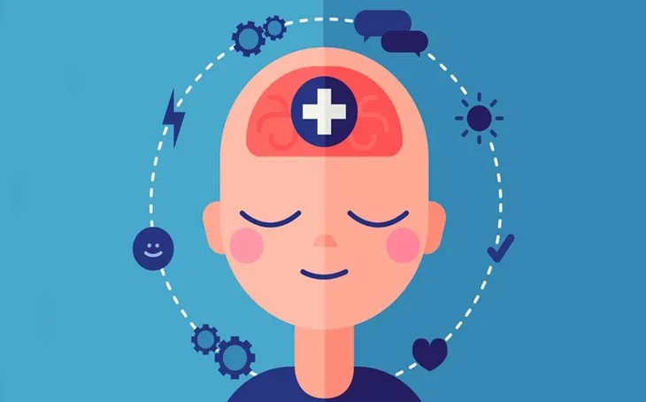

¿Qué es la Salud Mental?
La salud mental incluye nuestro bienestar emocional,
psicológico y social.
Influye en cómo pensamos, sentimos y actuamos en nuestra vida diaria.
También determina cómo enfrentamos el estrés, nos relacionamos
con otras personas y tomamos decisiones.